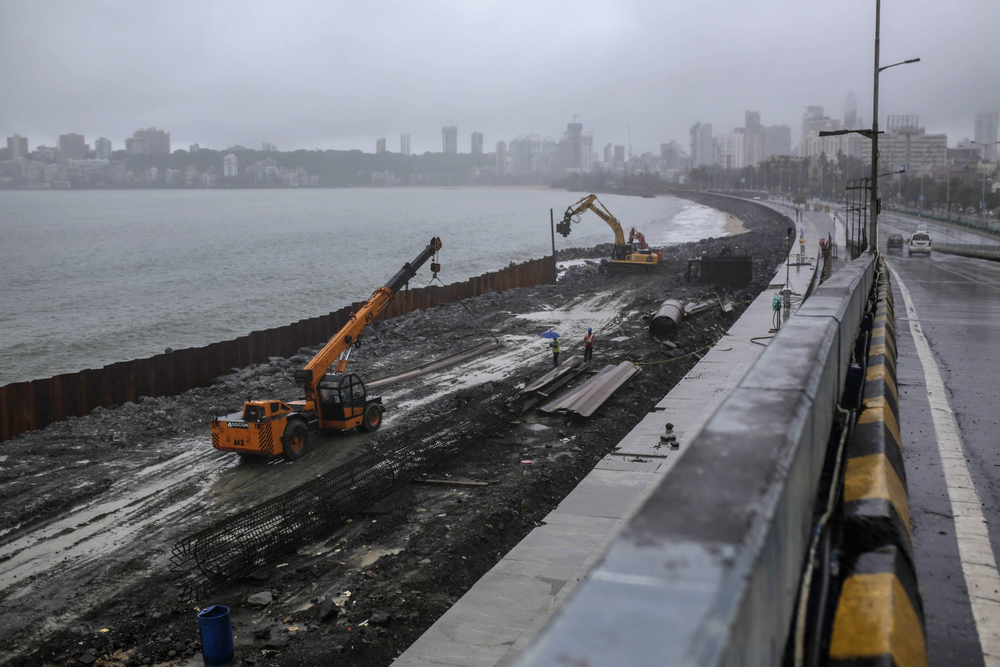

Tourism
India, the land of dazzling palaces, majestic mountains, and age-old traditions, has long
captivated the hearts of travellers. But the Indian tourism industry, like a majestic elephant
navigating a bustling market, faces both obstacles and exciting possibilities.
We'll be taking a deep dive into this vibrant sector. We'll dissect the challenges that hinder
its full potential, from infrastructure limitations to ensuring tourist safety. We'll discuss
solutions, brainstorm ideas, and explore how to overcome these hurdles.
However, our journey isn't just about navigating roadblocks. We'll also be shining a light on
the incredible opportunities that lie ahead. The rise of niche tourism experiences, the power of
digital marketing, and a growing emphasis on sustainability – these are just a few factors
poised to propel the Indian tourism industry forward.
By acknowledging the challenges and embracing the opportunities, we can pave the way for a
brighter future. A future where responsible tourism practices go hand-in-hand with economic
growth, and where every visitor leaves with an unforgettable experience of the magic that is
Incredible India.
So, get ready to embark on an enriching exploration. Let's delve into the captivating world of
Indian tourism, where challenges and opportunities converge to create a roadmap for success.
Infrastructure inadequacy in India's tourism industry is a significant barrier to its full potential as a
global tourist destination. This issue manifests in several key areas:

1.Transportation:
India's transportation infrastructure often struggles to meet the demands of both domestic and
international
tourists. Road networks, especially in rural areas and near tourist attractions, can be poorly
maintained or
insufficiently developed. This leads to longer travel times, discomfort for tourists, and sometimes
safety
concerns. While major cities have airports and railway stations, connectivity to remote or less popular
tourist destinations remains a challenge. Additionally, public transportation options within cities may
not
be adequate or tourist-friendly, making it difficult for travelers to navigate efficiently.
2.Accommodation: While India has a range of accommodations from luxury hotels to budget guesthouses, there are gaps in availability and quality, particularly in lesser-known tourist spots and rural areas. Many regions lack sufficient options to cater to diverse traveler preferences and budgets. Moreover, existing accommodations may not always meet international standards of cleanliness, safety, and amenities, which can deter foreign tourists.
3.Facilities at Tourist Sites:
Tourist attractions often suffer from inadequate facilities such as restrooms, information centers,
parking
areas, and signage. This lack of basic amenities can diminish the overall visitor experience and
discourage
tourists from spending extended periods at these sites. Insufficient management of tourist flow and
preservation efforts can also lead to overcrowding and environmental degradation in sensitive areas.
4.Digital Connectivity: In the digital age, reliable internet access and mobile connectivity are crucial for tourists to access information, make bookings, and stay connected while traveling. However, rural and remote tourist destinations in India often lack adequate digital infrastructure. Limited internet access can hinder online marketing efforts, online booking systems, and the availability of digital guides and information for tourists.
5.Environmental Sustainability:
The rapid growth of tourism in India has raised concerns about its environmental impact. Inadequate
waste
management systems, pollution, and unregulated development near natural attractions threaten the
ecological
balance and long-term sustainability of these destinations. Balancing tourism growth with environmental
conservation efforts is crucial to preserve India's natural and cultural heritage for future
generations.
6.Safety and Security: Ensuring the safety and security of tourists is paramount for any destination. India's vast geographic diversity and cultural richness mean that safety measures need to be robust and well-implemented across all tourist areas. Issues such as petty crime, road safety, and emergency response capabilities need to be addressed to build trust and confidence among tourists.